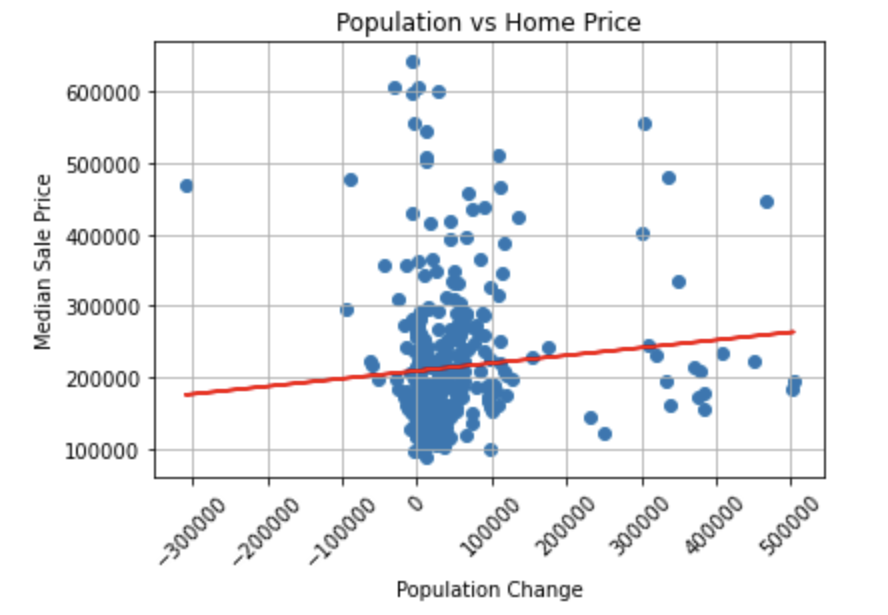
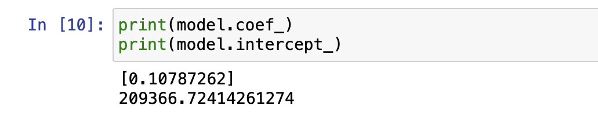

After cleaning our data in pandas the dataframes were exported to SQL.
Through SQL and inner join was applied based on year and state in order to fully merge our datasets.
This data was then fit into a linear regression model which provided use with a model coefficient of 0.11 and a 209366 model intercept.
Graphs


The model coefficient of 0.11 shows that migration does not have a positive correlation on home prices. However, this
small of a coefficient indicates that there is something else influencing rising home prices much more than migration.
Scott Armstrong, Brian Kenney, Alberto Garcia, Jadon Gonzaga